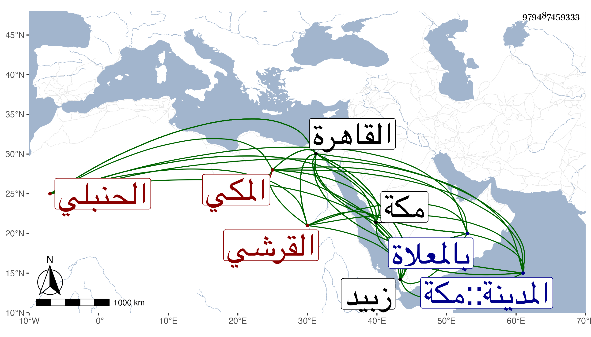

0902Sakhawi.DawLamic.ITO20230111-ara1.EIS1600.979487459333
Biography ID: 979487459333
843
عبد الكريم بن عبد الرحمن بن أبي بكر بن عبد الله بن ظهيرة بن أحمد بن عطية بن ظهيرة كريم الدين أبو المكارم بن الوجيه أبي الفرج القرشي المكي الحنبلي الماضي أبوه والآتي ولده يحيى وأمه زبيدية . ولد بزبيد في ربيع الأول سنة خمس وثلاثين وثمانمائة وحفظ القرآن والأربعين والخرقي في غير ابتدائه ، ودخل القاهرة مرارا أولها في سنة تسع وأربعين ورأى شيخنا والقاياتي ولكن لم يسمع منهما وأخذ في بعض قدماته عن العز الكناني وابن الرزاز والبدر البغدادي في الفقه والحديث وغيرهما وتكرر لقيه في عدة نوب لغالب من ذكر وسمع على السيد النسابة والبوتيجي والجلال بن الملقن والصلاح الحكري وهاجر القدسية وكاتبه ، وكان قد سمع في بلده على أبي الفتح المراغي والزين الأميوطي وأبي السعادات بن ظهيرة والتقي بن فهد ، وتفقه فيها بالشمس بن سعيد القاضي والشهاب بن زيد حين جاور عندهم وانتفع به كثيرا وعرض عليه من كتابه إلى العدد وكذا أخذ عن التقي بن قندس بمكة ثم على العلاء المرداوي وقرأ عليه تصنيفه التنقيح والتقي الجراعي وقرأ عليه المحرر للمجد بن تيمية وأذنا له بالافتاء والتدريس وكثرت مخالطتي له بمكة والقاهرة ، ونعم الرجل خيرا وفضلا وتوددا وكثرة انجماع وعيال وذكر للناس بالجميل ومما أنشدنيه في سنة خمس وتسعين بالقاهرة من نظمه :
| أنزه نفسي عن أذى القول والخنا | وإني إلى الاسلام والسلم أجنح |
| وأغضى احتسابا إن تجاهل عاقل | وإني كريم قد أضر وأنجح |
| وعقلي وديني والحياء يردني | عن الجهل لكني عن الذنب أصفح |
| فشتان ما بيني وبينك في الهوى | وكل إناء بالذي فيه ينضح |
وأنشدني من نظمه غير ذلك كقصيدة خاطب بها البدري أبا البقا بن الجيعان ولما توفي قاضي الحنابلة بالحرمين السيد المحيوي عين لذلك وذكر له بالقاهرة وغيرها فما كان بأسرع من تعلله ، واستمر حتى مات في ليلة الأربعاء خامس عشري صفر سنة تسع وتسعين ، وصلى عليه عقب الصبح ثم دفن بالمعلاة عند أقربائه رحمه الله وإيانا .
